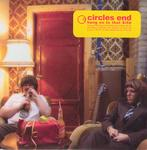

| Artist: | Circles End |
| Title: | Hang On To That Kite |
| Label: | Karisma Records Kar002 |
| Length(s): | 42 minutes |
| Year(s) of release: | 2004 |
| Month of review: | [12/2004] |
| 1) | Echoes | 6.15 |
| 2) | Tiny Lights | 3.13 |
| 3) | Red Words | 4.30 |
| 4) | Too Few Feet | 5.12 |
| 5) | Long Shot | 4.27 |
| 6) | Charlie | 4.00 |
| 7) | At Shore | 4.47 |
| 8) | Peeping Tom | 5.11 |
| 9) | The Dogfather Has Entered The Lift | 4.36 |
Tiny Lights is a more funky piece of work. Especially the guitar plays in a groovy style here, while the music itself is quite sunny and up-beat. In the middle we enter typical proggy waters, plenty of signature changing here. Focus and Camel are closest here, I guess; that warm woolly feeling.
With Red Words the music winds down again. There is something very American about the music, and the lyrics too. The hardly accented vocals of Jacobsen also help. The guitar playing can be pretty hypnotizing here. On the whole the music of Circles End is quite accessible (yet never poppy). However, when you listen closely you notice that there is more to it than that: I notice this especially when I have my earphones on.
On Too Few Feet Jacobsen shows the soul in his voice. He has that kind of timbre. The music alternates here between moody in the verses and the uplifting chorus riddled by seventies organs. This gives the music a very Canterbury like feel, although I also think of Focus a lot. Long Shot is a rather lazy tune with plenty of cymbals, and the majestic guitar in Focus style.
Time for a hard rocking instrumental, Charlie, in which the band lets loose entirely. At Shore contrasts nicely with the former, because of its somber, moody atmosphere. The drums border on jazz, and yes the guitar also. The vocal melody could have done with a bit more distinctiveness. In that sense at least compatriots Gazpacho come off a bit better. Surprisingly, we get a bit of violin on this one (and cello I guess).
Peeping Tom is a mid-tempo piece, with the guitarist playing those repetitive lines, almost like a rhythm guitar, but too melodic. This is an oft occurring pattern in the music of Circles End. The feel is Camel here, but alternating with the more harrowing King Crimson/Anekdoten influence.
We close down with the humourously titled, The Dogfather Has Entered The Lift. This is a very moody opening piece. Subtle organ until the Latin like guitar sets in. Very sensitively played. The main part however is more up-tempo and a bit fiddly.